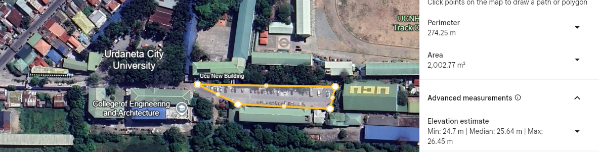
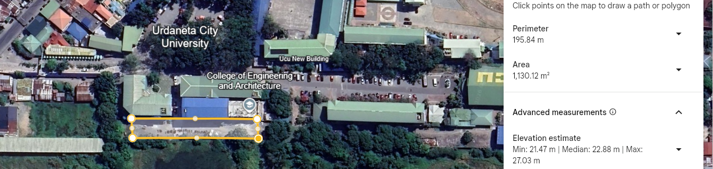
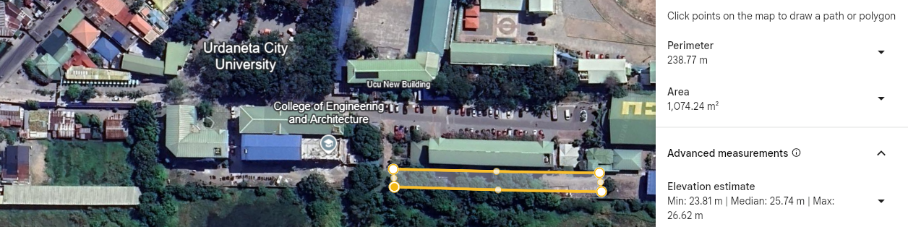
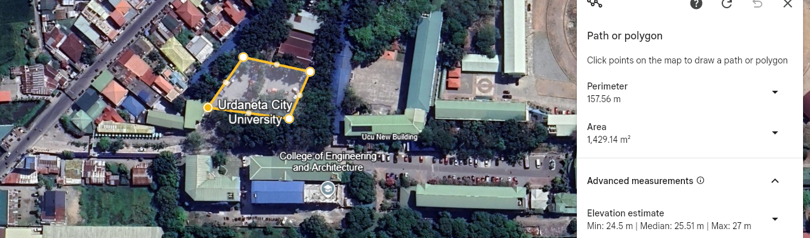

| Ratio of Parking Area to Total Campus Area of Urdaneta City University | |
|---|---|
|
 Zone 1 Satellite Boundary (2,002.77 m²)
|
 Zone 2 Satellite Boundary (1,130.12 m²)
|
|
 Zone 3 Satellite Boundary (1,074.24 m²)
|
 Zone 4 Satellite Boundary (1,429.14 m²)
|
| Parking Zone | Area Size (m²) |
|---|---|
| Zone 1 (Adjacent to New Building) | 2,002.77 m² |
| Zone 2 (Adjacent to CEA Building) | 1,130.12 m² |
| Zone 3 (Adjacent to Engineering Wing) | 1,074.24 m² |
| Zone 4 (Main Administration Parking) | 1,429.14 m² |
| Total Parking Footprint | 5,636.27 m² |
The parking areas of Urdaneta City University (UCU) have a combined area based on the following measurements: 2,002.77 m², 1,130.12 m², 1,074.24 m², and 1,429.14 m², resulting in a total parking area of 5,636.27 m².
When compared to the total campus area of 33,198.99 m², the parking areas account for approximately 16.98% of the entire campus. This indicates that a significant portion of the university land is allocated to vehicle parking spaces.
This proportion reflects the university’s capacity to accommodate vehicles for students, faculty, and visitors, but also highlights an important consideration for sustainability. Allocating nearly 17% of the campus to parking suggests potential impacts on land use efficiency, green spaces, and pedestrian-friendly areas.
To support sustainable campus development, UCU may consider strategies such as optimizing parking layouts, promoting alternative transportation (e.g., walking, cycling, and zero-emission vehicles), and expanding green or multi-use spaces. These efforts can help balance mobility needs with environmental sustainability while making better use of limited campus space.
Overall, the data shows that UCU provides adequate parking infrastructure, while also presenting opportunities to improve land use efficiency and further align with sustainability goals.